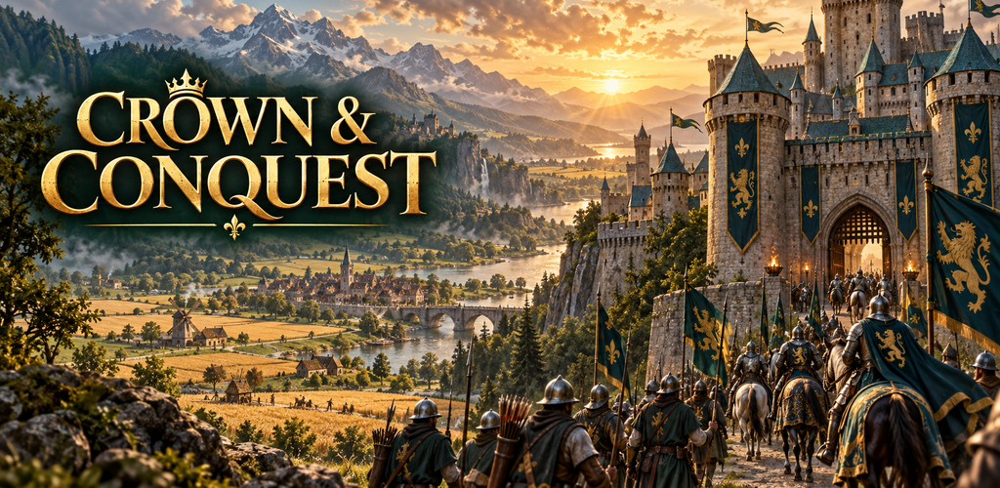
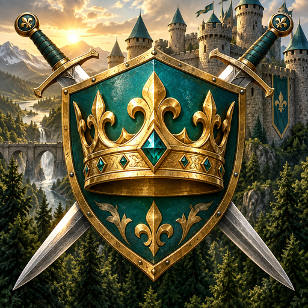

Play Crown & Conquest ↗Raise your banner.
Original medieval artwork, in-game buildings and troops, forest terrain and actual phone screenshots.
Download complete artwork pack ↓ · Asset manifest · Generation prompts
Direct worker control
Tap a worker, drag onto a highlighted tree, deposit or farm, then release to assign. Actual touch-gameplay screenshots. Walking uses complete painted frames.
Walking art prompts · Worker controls handover
Three distinct factions
Verdant Crown, Ironfjord Clans and Sunspire Dominion. Actual phone-sized gameplay; Imperial views use 1500 XP test profiles.
Faction art prompts · Faction handover
Promotional artwork


Living land & three ages
Assign woodcutters and miners, clear and renew sites, and evolve from timber to stone through XP. Castle and Imperial captures use the documented progression test fixtures.
Age and land artwork prompts · Worker animation prompt
Other gameplay screenshots
Phone captures from the playable development build. Purchases are not live; XP unlocks and earned chests work.